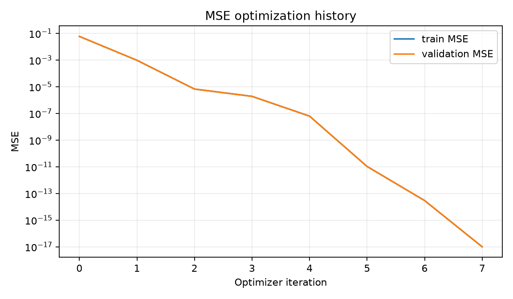
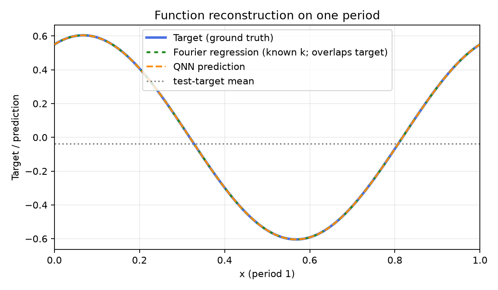
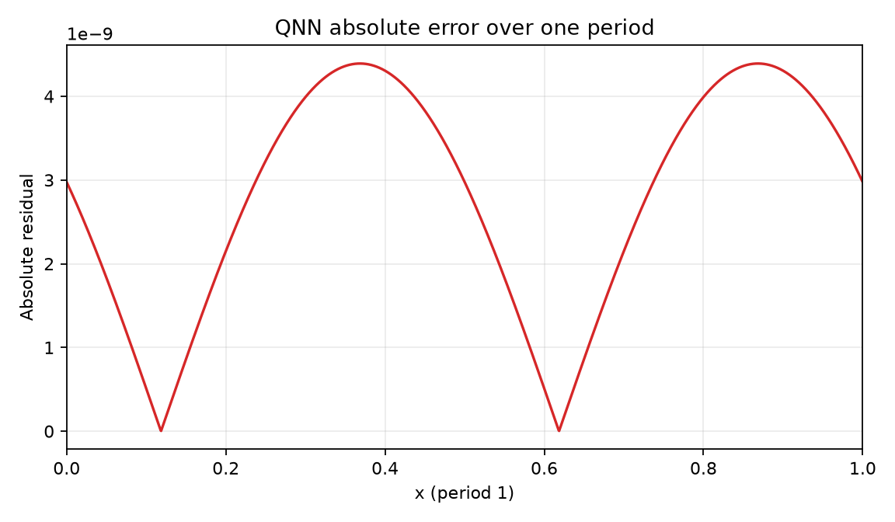
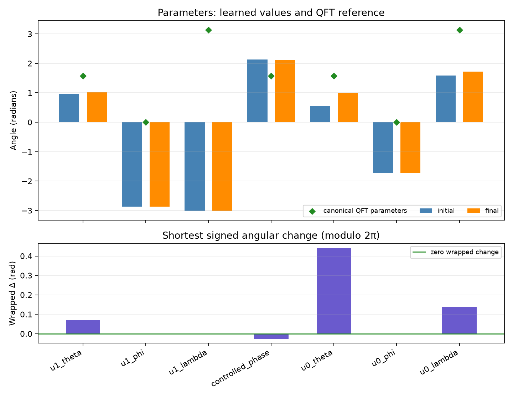

Comparison group: periodic-function-mse-zero-offset-multidataset-ry-angle-encoding-z1-readout
Training loss: MSE only; no Frobenius/process-fidelity term or PINN residual.
Encoding: RY(2πx)|0⟩ on qubit 0, x∈[0,1), period 1.
Readout: ideal Pauli-Z expectation on qubit 1.
Absolute error over one period: mean=2.79573e-09, max=4.39152e-09; defined pointwise as |QNN prediction − target| on the 2048-point periodic grid.
{
"run_id": "20261017T014010353857Z_periodic-function-mse-zero-offset-multidataset_seed-0043_08a24406",
"status": "FINISHED",
"comparison_group": "periodic-function-mse-zero-offset-multidataset-ry-angle-encoding-z1-readout",
"protocol_version": "0.1.0",
"objective": "training-set mean squared error only",
"loss_excludes": [
"process fidelity",
"Frobenius/unitary alignment",
"PINN/physics residual",
"frequency labels"
],
"encoding": "RY(2*pi*x)|0> on q0; x in [0,1), period 1",
"ansatz": "qft2_trainable_u_cp_u_swap",
"readout": "Pauli-Z expectation on q1",
"seed": 43,
"data_seed": 8675309,
"optimizer": "L-BFGS-B",
"iterations": 7,
"function_evaluations": 80,
"optimizer_success": true,
"optimizer_message": "CONVERGENCE: NORM OF PROJECTED GRADIENT <= PGTOL",
"elapsed_seconds": 0.062306726998940576,
"initial_train_mse": 0.058507943340590216,
"final_train_mse": 9.817779249207165e-18,
"validation_mse": 9.915972934109716e-18,
"test": {
"mse": 9.318129615874204e-18,
"rmse": 3.0525611567787145e-09,
"r2": 1.0
},
"constant_baseline_test": {
"mse": 0.18981262167646676,
"rmse": 0.43567490365692024,
"r2": -0.0009072946037564922
},
"known_frequency_fourier_baseline_test": {
"mse": 4.057989876157265e-32,
"rmse": 2.0144453023493254e-16,
"r2": 1.0
},
"spectral_coefficient_mse_k0_to_16": 2.8360948719726683e-19,
"dense_grid_absolute_error_mae": 2.7957287359115022e-09,
"dense_grid_absolute_error_max": 4.3915180936160425e-09,
"target_peak_frequency": 1,
"predicted_peak_frequency": 1,
"frequency_peak_correct": true,
"qft_process_fidelity_diagnostic_only": 0.016014031526512644,
"initial_qft_process_fidelity_diagnostic_only": 0.010632960674679542
}




